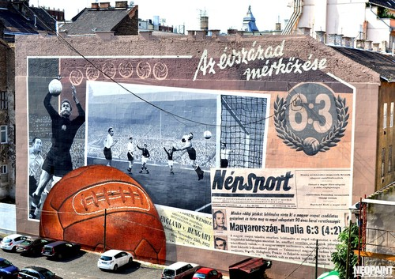
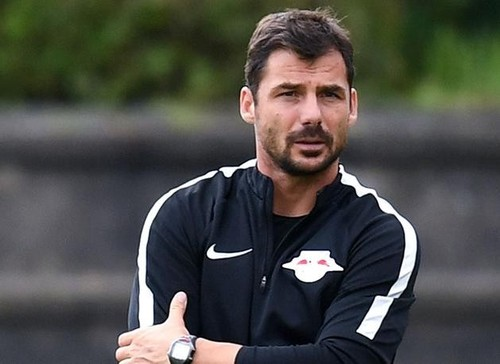
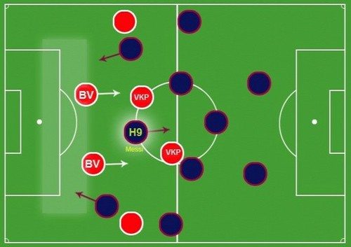
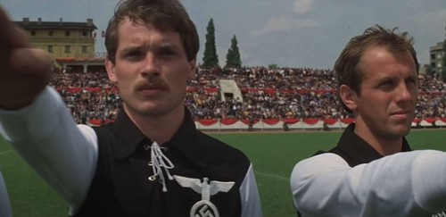

Labdarúgás magyar szemszögből

Az évszázad mérkőzése
Ez a mérkőzés történelmi fordulatot jelentet a labdarúgásban, mert a magyar csapat olyan játékos mozgásokat és labda irányításokat mutattak meg a mérkőzésen, amley eddig sehol sem volt megfigyelhető a világon. A mérkőzés előtt nagyon összetett felkészülési edzések és mérkőzések előzték meg. Az akkori szövetségikapitány, Sebes Gusztáv angol típusú környezetet és időjárási körülményeket alaított ki itthon a nemzeti tizegynek, illetve a saját labdájukat lecserélték a keményebb angol típusú labdára.

Lőw Zsolt edzői teljesítménye
Edzői pályafutását az osztrák másodosztályú Lieferingnél kezdte meg. Ez idő tájt Ralf Rangnick irányította a salzburgiakat és 2014-ben felkérte a segítőjének. Lőw a 2014–2015-ös idényben Osztrák Bundesligát és kupát nyert a Salzburggal, majd 2015 nyarán a RB Leipzighez is követte Ragnickot. 2018. július 11-én a Paris Saint-Germain csapatához szerződött, ahol Thomas Tuchel munkáját segítette másodedzőként. Két és fél évig, 2020 decemberéig tartozott a párizsi csapathoz, amellyel hat trófeát nyert és bejutott a Bajnokok Ligája 2020-as döntőjébe. Miután Tuchelt menesztették a csapattól, Lőw is távozott a PSG-től. 2021. január 26-án hivatalossá vált, hogy ő is csatlakozott a német mester szakmai stábjához az angol Chelseanél. Jelenleg a Bajnokok Ligája 2020/2021-as elődöntőjében a Real Madridot várják.

Hamis kilences
A magyarok futballja szolgálgálta ki és fejlesztette tökélyre a Pep Guardiola által vezetett Barcelonát. A „hamis kilences” manapság is jelen van a labdarúgásban, amit szintén a magyar válogatott alakított és fejlesztett ki, amely a mélységből érkező középcsatárt jelenti. Az Aranycsapatban ezt a szerepet Hidegkuti Nándor töltötte be Sebes Gusztáv kapitánykodása alatt, a játékos a kilences mezszámot viselve rohamozott a két szélen száguldó Puskás és Kocsis árnyékában. Folyamatosan váltogatták a pozíciójukat a támadásoknál, hogy összezavarják ellenfelé védelmét.

Pelével egy filmben
Sokan nem tudják, de a Menekülés a győzelembe című filmben a football mérkőzési jelenetet a Hungária körúti stabionban vették fel. A helyszínen kívül még magyar színészek is részt vettek a forgatáson. Az egyik Egervári Sándor volt, akinek az egyik jelenetben fel kellett rúgnia a háromszoros brazil világbajnokot, Pelét. A jelenet végül annyira hitelesen és jól sikerült, hogy a rendező felállva tapsolt.